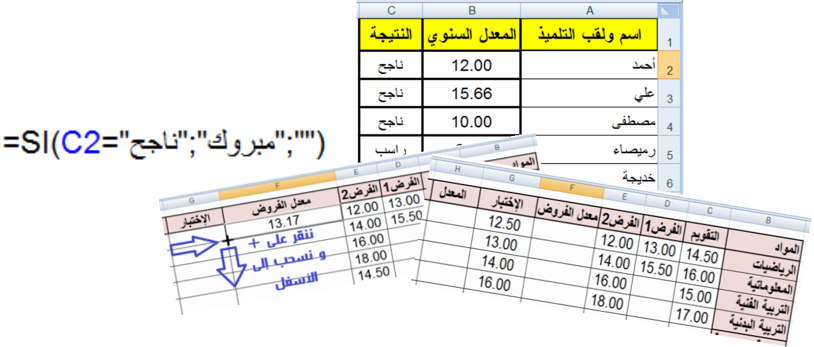
يوجد في كشف نقاط التلميذ نوعان من المواد الدراسية:
قد يبدو جزء من هذا الكشف على الشكل التالي:
هل نستعمل صيغة ثم ننسخها؟ أم نستعمل دالة؟
الصيغة عبارة حسابية و/أو منطقية، يقوم المجدول بحساب نتيجتها تلقائيا بعد كتابتها والضغط على المفتاح Entrer.
الدوال صيغ جاهزة مُضمَّنة في البرنامج يمكن استخدامها بسرعة وسهولة.

مثال 1: يمكن أن تحتوي الصيغة أعدادا وعمليات حسابية فقط.
مثال 2: يمكن أن تحتوي الصيغة عبارة منطقية وتكون نتيجتها إما "صح" VRAI وإما "خطأ" FAUX. عبارة الصيغة: محتوى الخلية A5 أكبر من محتوى الخلية B5.
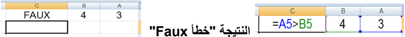
مثال 3: يمكن أن تحتوي الصيغة مراجع للخلايا.
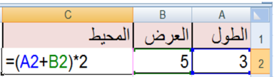
لحساب محيط هذا المستطيل ووضع قيمته في الخلية C3 نتبع الخطوات التالية:
ملاحظة: إذا غيرنا مثلا قيمة الخلية A2 فإن النتيجة في الخلية C3 تتغير تلقائيا.
بالتأكيد من الأفضل استعمال الدوال:
ألا يؤدي استخدام كل العمود كنطاق في دالة إلى بطء العمليات الحسابية؟
هذا الاعتقاد غير صحيح، لأن Excel يتعقب آخر خلايا العمود التي تم استخدامها ولن يستخدم الخلايا التي تقع بعدها عند حساب نتيجة الصيغة.
نريد جمع محتويات الخلايا C7، D7، E7 ونضع الناتج في الخلية F7.
نحصل على معدل الرياضيات 13.17.
لنسخ الصيغة ولصقها نستعمل مقبض التعبئة (+) ونسحب إلى الأسفل.
بالنسبة للمواد الأساسية نحصل على نتائج صحيحة. لكن بالنسبة للمواد غير الأساسية فإن النتائج تكون خاطئة، إذ سنجمع قيمتين فقط ونقسم على ثلاثة.
يمكن كتابة صيغة أخرى بالنسبة للمواد غير الأساسية، لكن الأفضل استعمال الدالة Moyenne.
ننسخ الدالة ونلصقها باستعمال مقبض التعبئة (+) والسحب إلى الأسفل.
مثال 5: يمكن إدراج دالة داخل صيغة.
إذا كان محتوى الخلية A1 هو قيمة نصف قطر دائرة.
لحساب محيط هذه الدائرة نكتب في الخلية B1 الصيغة التالية:
=2PI()A1
حيث PI() دالة ترجع قيمة π.
كل الدوال تستعمل أقواسا ()، وما بداخل الأقواس هي وسائط الدالة.
قد يكون للدالة وسيط أو أكثر، وقد يكون عدد الوسائط محددا أو غير محدد، وقد يكون اختياريا، وقد تكون دالة بدون وسيط.
لا يمكن استخدام صيغة للإجابة على هذا السؤال.
الحل: استخدام الدالة MAX: =MAX(A1:E1000)
من فوائد استعمال الدوال: تنفيذ حسابات لا يمكن تنفيذها باستعمال الصيغ.
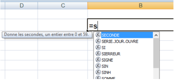
لإدراج دالة يمكن اتباع إحدى الطرائق التالية:
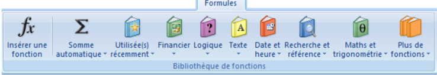
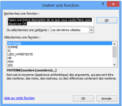
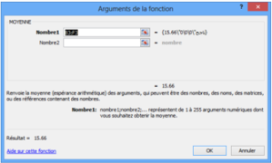
بعد النقر على OK تظهر علبة حوار أخرى لإدخال وسائط الدالة.
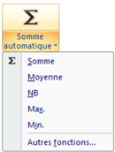
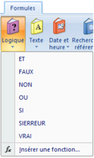
لحساب معدل المادة في العمود H: نضرب "معدل الفروض" بالمعامل 2 و"الاختبار" بالمعامل 1، نجمع الناتجين ثم نقسم على 3.
هل توجد دالة لحساب هذا المعدل أم أننا مجبرون على استعمال صيغة؟
لا توجد دالة لحساب معدل المادة بالطريقة المطلوبة، لذلك يجب كتابة صيغة لحساب هذا المعدل كما يلي:
في كشف نقاط نهاية السنة الدراسية، نريد إدراج عمود للنتيجة يكون فيه محتوى الخلية "ناجح" إذا كان المعدل السنوي للتلميذ أكبر من أو يساوي 10 و"راسب" في الحالات الأخرى.
هل توجد دالة نستخدمها لهذه العملية؟
بالفعل هي الدالة الشرطية SI.
من أهم الدوال استخداما في Excel الدالة الشرطية SI "إذا كان" التي تمكّن الصيغة من اتخاذ القرار.
عبارة الدالة: =SI(الشرط; القيمة إذا تحقق الشرط; القيمة إذا لم يتحقق الشرط)
الشرط: المعدل السنوي أكبر من أو يساوي 10: B2>=10
إذا تحقق الشرط: تظهر عبارة "ناجح" في الخلية من العمود "النتيجة".
إذا لم يتحقق الشرط: تظهر عبارة "راسب" في الخلية من العمود "النتيجة".
ملاحظة: نحصل على نفس النتيجة باستعمال الصيغة =SI(B2<10;"راسب";"ناجح").
نريد إدراج عمود للتهنئة بحيث: إذا كان محتوى خلية "النتيجة" هو "ناجح" يصبح محتوى خلية التهنئة من العمود D هو "مبروك" وإلا نترك خلية التهنئة فارغة.
في الخلية D2 نكتب الدالة (لاحظ الصورة)، نضغط على المفتاح Entrer ثم ننسخ ونلصق الدالة.
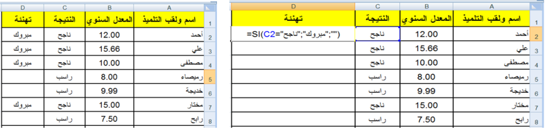
لاحظ كيف تمثل الخلية الفارغة في الدالة: " ".
نظرا لنجاح عدة تلاميذ رغم مستوياتهم الضعيفة في اللغة العربية، قررت وزارة التربية أنّه لا يعتبر ناجحا إلا من تحصل على معدل سنوي أكبر من أو يساوي 10 ويكون معدله في اللغة العربية أيضا أكبر من أو يساوي 10.
نلاحظ وجود شرطين في هذه الإشكالية من الواجب أن يتحققا معا، لذلك نلجأ إلى استخدام الدالة المنطقية "و" ET مع الدالة الشرطية SI.
يمكن استخدام الدوال المنطقية مستقلة ويكون الناتج إما Vrai وإما Faux، كما يمكن استخدامها داخل الدالة SI للربط بين الشروط.
توجد دوال منطقية أخرى ومنها: "أو" OU و"نفي" NON.
الشرط: المعدل السنوي أكبر من أو يساوي 10 ومعدل اللغة العربية أكبر من أو يساوي 10.
إذا تحقق الشرط: تظهر عبارة "ناجح" في الخلية من العمود "النتيجة".
إذا لم يتحقق الشرط: تظهر عبارة "راسب" في الخلية من العمود "النتيجة".
في الخلية D4 نكتب الدالة (لاحظ الصورة)، نضغط على المفتاح Entrer ثم ننسخ ونلصق الدالة =SI(ET(B2>=10;C2>=10);"ناجح";"راسب").

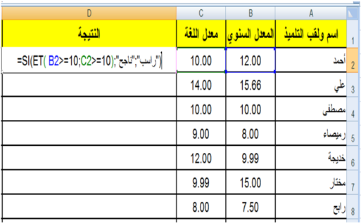
ما هي فوائد استعمال الدوال في Excel؟
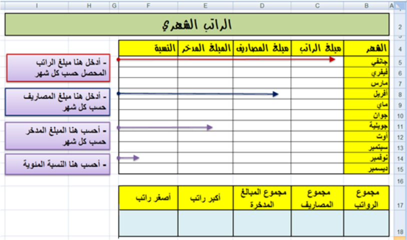
استعمال العمليات الحسابية على التواريخ.
استهلكت أسرة 500 كغ بطاطا بين التاريخين التاليين 2022-1-1 و 2022-12-31.
نريد حساب متوسط الاستهلاك يوميا، اكتب في الخلية B5 الصيغة المطلوبة.

باستعمال الدالة "أو" OU اكتب صيغة داخل الخلية B3 وانسخها للحصول على القيمة VRAI إذا كان اللون المقابل في العمود A من ألوان العلم الوطني، والقيمة FAUX في الحالات الأخرى.
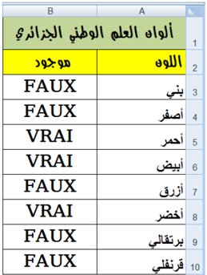


قد تكون من الشكل: =OU(A3="أخضر";A3="أبيض";A3="أحمر")
أدخل في العمود A قيما عشوائية من 1 إلى 100.
أدخل في العمود B قيما عشوائية من 1 إلى 100.
اكتب صيغة في العمود C تدرج العبارة:
للمشاركة في مسابقة الدخول للتكوين في المدرسة العليا للرياضيات، يشترط أن يكون المعدل السنوي أكبر من أو يساوي 10 ومعدل الرياضيات أكبر تماما من 10.
اكتب صيغة تدرج في العمود D "مقبول" أو "مرفوض" حسب الحالة.